One image
Vitrine
Warp grid 5 × 3 · Catmull-Rom
Vitrine runs the projectors in a museum gallery. It joins several projectors into one picture, fits that picture to walls and objects, plays video, and reacts to buttons and sensors. It keeps running when nobody from the AV team is in the building.
Drag a point. Arrow keys nudge the selected point, Shift for 10×.
01 Edge blending
Edge blend
Edge blend
One image
Overlap · 2× light
- 01 AlignFit each projector to the wall
- 02 OverlapWhere two meet, the wall gets double light
- 03 Rampwidth 240 · curve 2.00 · gamma 2.20
- 04 Liftblack lift 0.030 · feather 16 px
When two projectors overlap, the strip where they meet is twice as bright. Vitrine fades the edge of each picture across that strip so the two add up to one even image. Width, curve and gamma are set for each side. Projectors also never show true black, so the overlap looks lighter in dark scenes. Vitrine raises the black level outside the overlap to match. Auto blend takes the widths from the overlap itself.
Warp
02 Warp, mask, map
Pin four corners, or drag a grid of up to 33 × 33 points.
Every projector has its own warp, so its picture can be bent to fit a wall that is not flat or not square to the lens. Areas the light should not reach can be masked out, and brightness and colour can be adjusted for each projector so that older lamps still match newer ones.
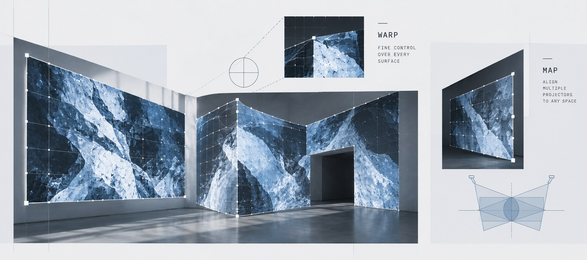
-
Warp grid
Each projector gets a grid from 2 × 2 up to 33 × 33 points. Drag points with the mouse, or nudge the selected one with the arrow keys (1 px, or 10 px with Shift). Changing the grid size keeps the shape already made.
-
Masks
Draw a polygon around anything the projector should not light, such as a doorway or a sculpture. The edge can be softened, and a mask can be inverted to show only what is inside it.
-
Layers on any shape
Place a video on any four-sided shape on the canvas and it is drawn with correct perspective. Use it for a picture frame, a tilted panel or a window.
-
3D models
Load an OBJ model of the room or object. Match six or more points on the model to points on the wall, and Vitrine works out where the projector is and wraps the video onto the surface.
03 Trigger rules
when
if
then
A rule has three parts.
- 1
Event
An event arrives, such as a button press or a network message.
- 2
Conditions
Conditions check things like a variable, the current cue or the time of day.
- 3
Actions
If they pass, actions run, such as starting a cue or switching projectors on.
- Trace
- The Triggers page records each step which shows why a rule did or did not run.
- Debounce
- Debounce ignores repeated presses, and variables can survive a restart, for example a visitor count.
- Scripts
- For anything more complicated a short script can be written, which runs in a sandbox.
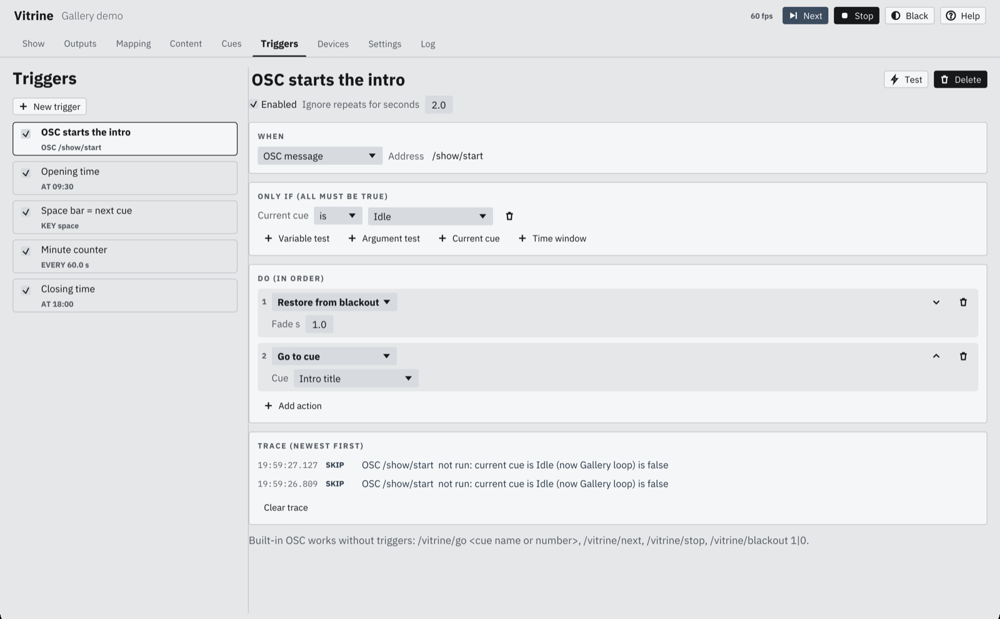
04 / Unattended
Doors openat ten.
The show starts on its own, whether or not anyone from AV is in. Vitrine launches when the computer logs in, and after a crash or a power cut it picks up at the same cue.
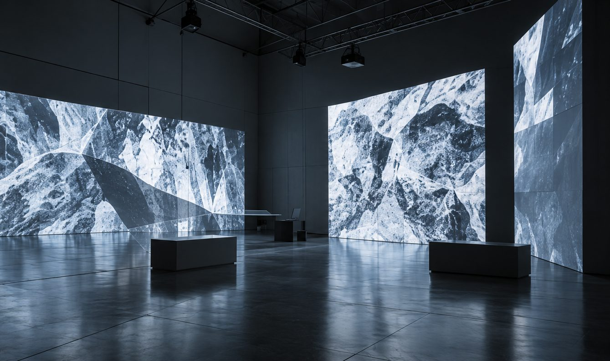
What happens when
- A
Graphics card reset, or display asleep
Vitrine rebuilds its graphics objects and carries on. The show clock keeps running the whole time.
<2s - B
Crash, or a freeze of 10 seconds
A supervisor process restarts the app. The show resumes at the same cue and position, and looping video seeks to where it should be.
<10s - C
Power cut
The computer logs in and starts Vitrine by itself. The show position is saved every second, so it resumes from there.
<60s - D
Bad show file
If the app restarts three times in ten minutes, it starts in safe mode: screens black, network commands ignored, and the reason written to the log.
3/10 min - E
Display unplugged
Output windows stay where they are. A monitor change is applied only after two checks agree, so a brief flicker does not rearrange the show.
2checks - F
Projector fault
Vitrine asks each projector for its status over PJLink every 30 seconds. A fault sends a webhook or email after 15 seconds, and repeats every 10 minutes until it clears.
30s
Recovery times are targets from the product spec. For a power cut, the time is counted from login. Saves are written in one step so a cut cannot leave a half-written file, and the last 30 backups are kept.
05 The app
Nine pages.
No hidden menus.
01 / 09
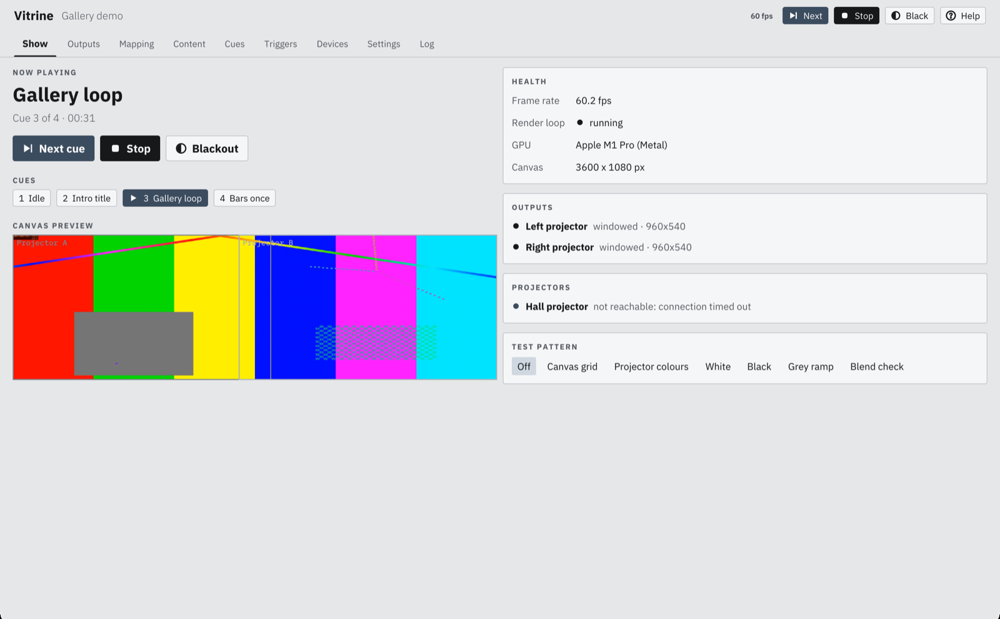
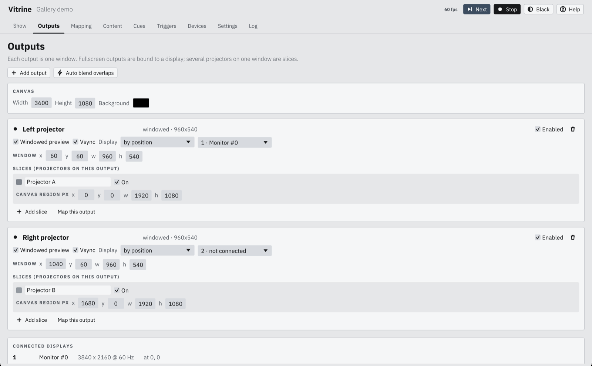
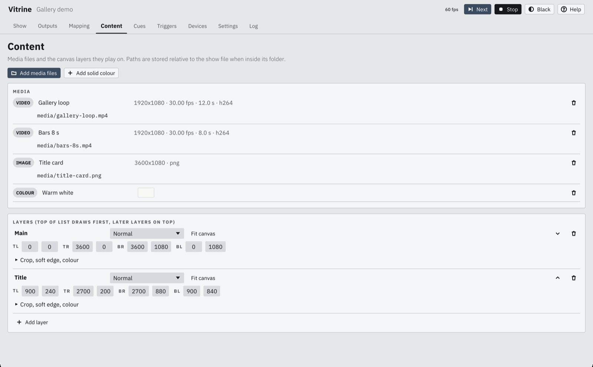
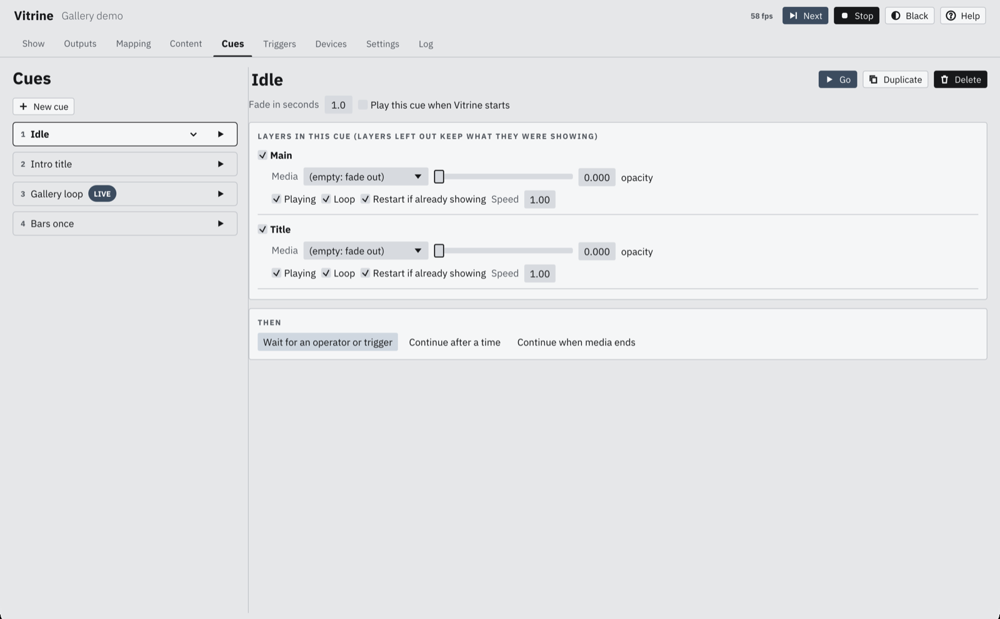
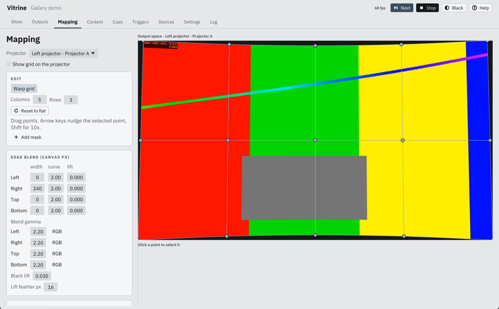
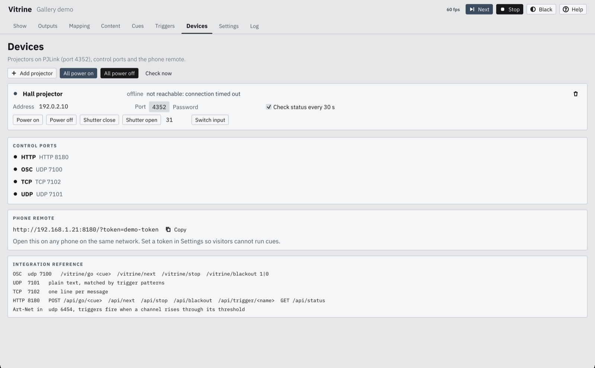
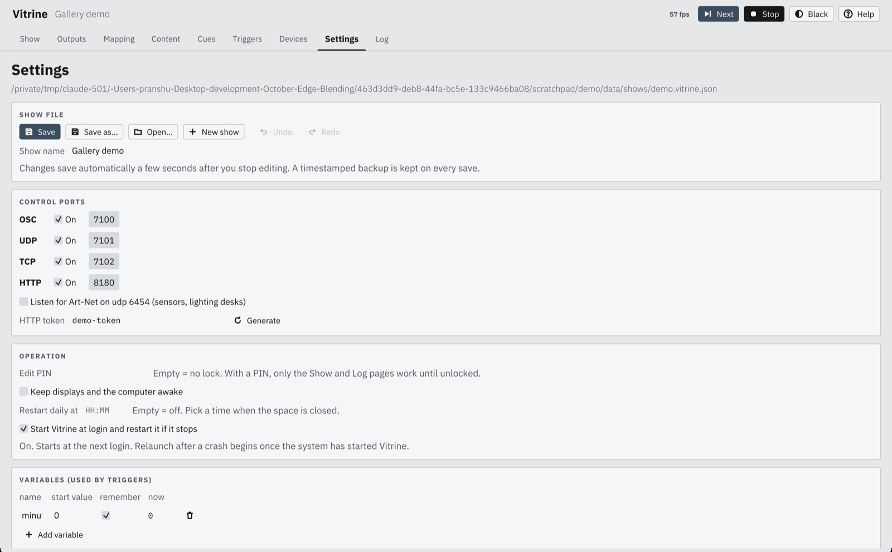
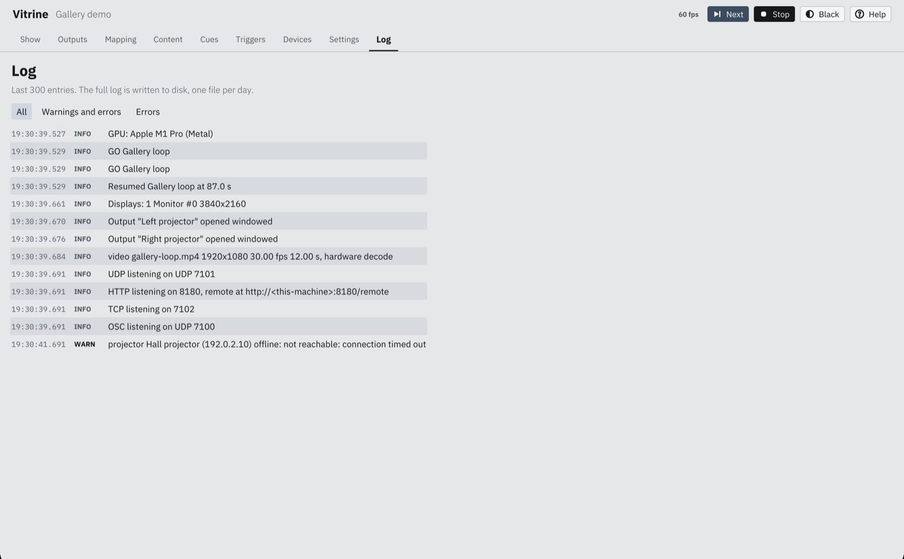
Specification
Platform
macOS on Metal, Windows 11 on Direct3D 12, Linux on Vulkan. One native app per system, written in Rust, with no browser inside. The same show file opens on all three.
Outputs
2 to 8 projectors per machine, several slices per output for GPU spanning. Optional 10-bit surfaces, mipmapped canvas sampling.
Video
H.264, HEVC, VP9, AV1, ProRes 422 and 4444 with alpha. 10-bit kept end to end. PQ and HLG tone mapped for SDR projectors. Image sequences. Hardware decode with software fallback, zero-copy on macOS.
Live input
Cameras and capture cards, NDI® sources, SRT, RTSP and UDP streams. Reconnects every 2 s.
Audio
Per layer to a chosen device, opened at the clip's native rate. Surround passes through when the device has the channels.
Control
OSC, UDP, TCP, HTTP with WebSocket, Art-Net, PJLink, serial, MIDI, schedules. A tablet remote page for museum staff at /remote.
Cluster
One machine leads and the others follow. The leader sends the show clock 30 times a second over UDP and shares the show file over TCP. There is no hardware genlock.
Privacy
No telemetry, no outbound calls except alerts that have been set up. Optional API token, edit PIN, works fully offline.
Licence
Licensed per PC. One licence covers up to 2 PCs. It comes as a USB dongle or as a licence locked to the PC.